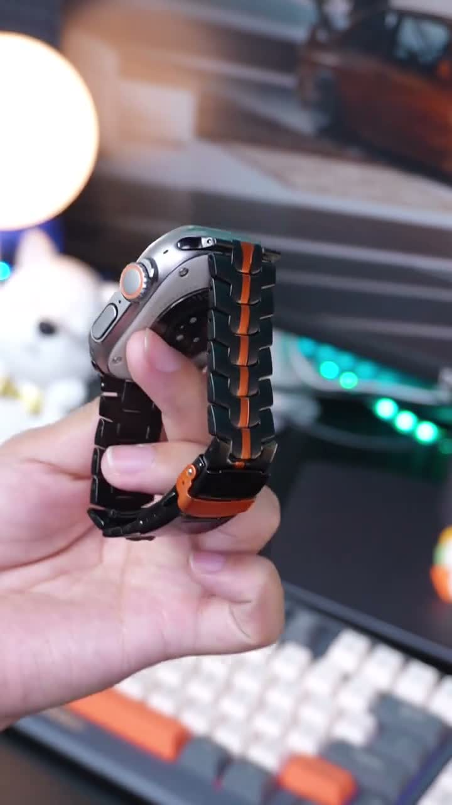

达人合作拍摄说明
看起来像换了块表，其实只是换了条表带。
利用黑橙撞色、金属细节和上腕前后反差，让观众不用解释也能立刻看懂这次外观升级。

视频主打卖点
第一：普通 smart watch 秒变高级金属腕表感
换上这条金属表带后，原本普通的智能手表会更有机械感、硬朗感和高级感，像是换了一块新表。
第二：黑橙撞色很抓眼
中间的橙色线条是视觉记忆点，第一眼就能吸引观众停留，很适合放进 TikTok 前三秒钩子。
次要卖点
第三：折叠式表扣更有安全感
重点拍摄表扣打开和扣上的动作，尤其保留“咔哒”闭合声，让观众直观感受到稳固和质感。
第四：适合通勤、车内、EDC 和男生穿搭
这不只是替换表带，更像一次日常配件升级，适合办公室、车内、桌搭、街头穿搭和送礼场景。
前三秒怎么拍
不要从包装开始。第一帧直接给完整上腕效果，再用细节证明它为什么显得高级。
1. 第一帧直接给上腕效果
先展示佩戴完成后的近景，让观众立刻看到 smart watch 从普通表带变成金属机械感的效果。

2. 把橙色中线对准镜头
缓慢转动手腕，并让橙色中线始终成为画面的视觉中心。

3. 近拍表扣和链节细节
极近距离展示折叠扣、金属链节和连接口，最好拍到“咔哒”扣上的动作，再回到完整上腕画面。

视频内容制作顺序
按照六个部分自然推进，从前后反差、视觉记忆点和细节证明，一路带到生活方式场景与点击转化。
先拍前后反差
核心表达
我没买新表，只是换了一条表带，但整个质感完全不一样了。
画面
普通表带一闪而过，立刻切到黑橙金属表带上腕效果。
放大黑橙撞色记忆点
核心表达
橙色中线让它有跑车感、户外装备感和机甲感，第一眼就比普通表带更抓眼。
画面
表带对准镜头缓慢转动，让橙色线条停留在画面中心。
展示完整上腕效果
核心表达
戴上后不是普通替换表带，而是让 smart watch 看起来更像一块金属腕表。
画面
自然光下转动手腕，拍正面、侧面、低头看表、整理袖口。
用细节建立信任感
核心表达
金属链节、折叠表扣、连接口和扣合声音，是让观众相信质感的关键。
画面
近拍链节纹理、橙色中线、表扣打开和扣上，最好有“咔哒”声。
加入生活方式场景
核心表达
它适合通勤、车内、EDC 桌搭和男生日常穿搭，不只是换表带，是整体风格升级。
画面
方向盘、电脑桌、键盘、咖啡、黑色穿搭、夹克袖口、车钥匙。
用颜色选择 + CTA 收尾
核心表达
如果你的 smart watch 也看起来太普通，点开商品链接，选颜色前记得确认表盘尺寸。
画面
展示黑橙、银橙、钛色、黑色等颜色，最后指向购物车。
用词限制
可以说
- compatible with apple watch
- smart watch band
不要说
- apple watchband
达人交付清单
交付 TikTok 竖屏视频，建议每条 20–30 秒，并保持自然的达人原生表达。前两秒展示完整上腕效果，加入细节近景和表扣演示，最后用明确的商品链接引导收尾。
竖屏 9:16
0–2 秒钩子
上腕演示
表扣特写
不包含手表
确认适配型号